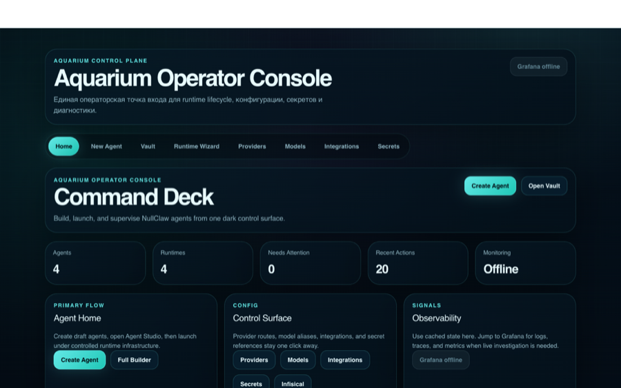
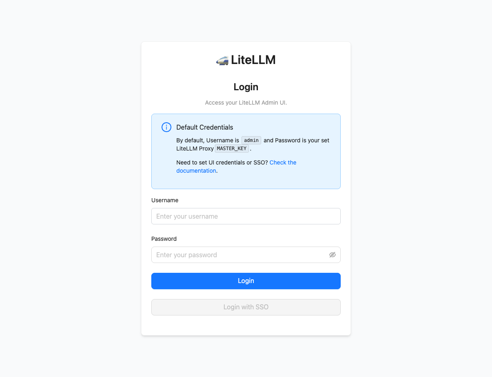
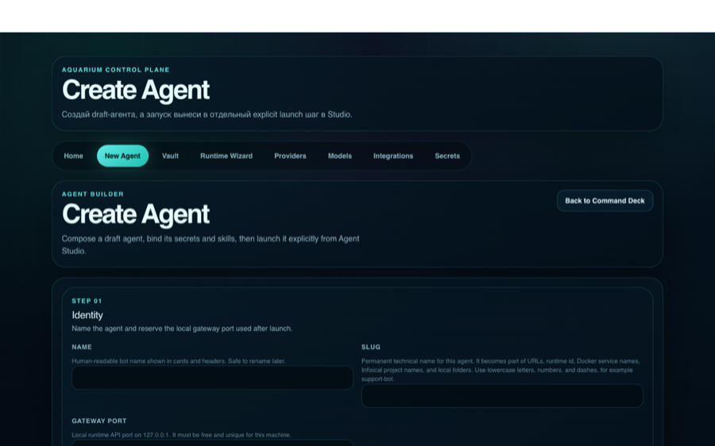
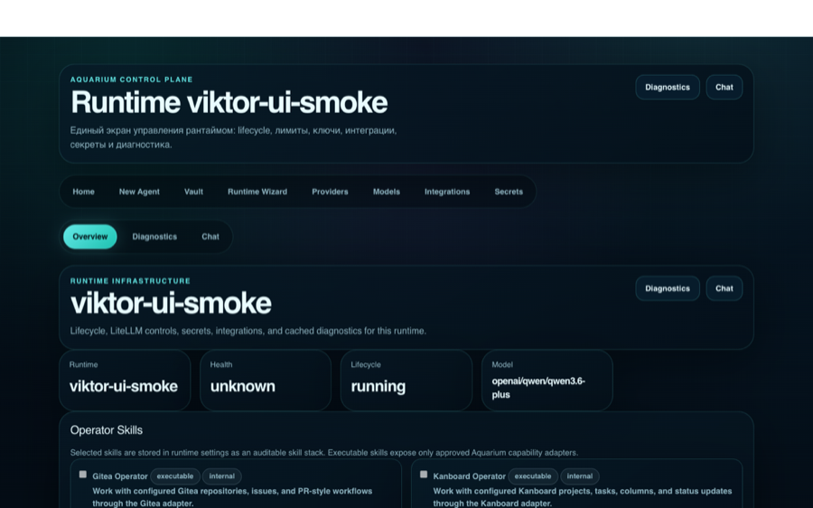
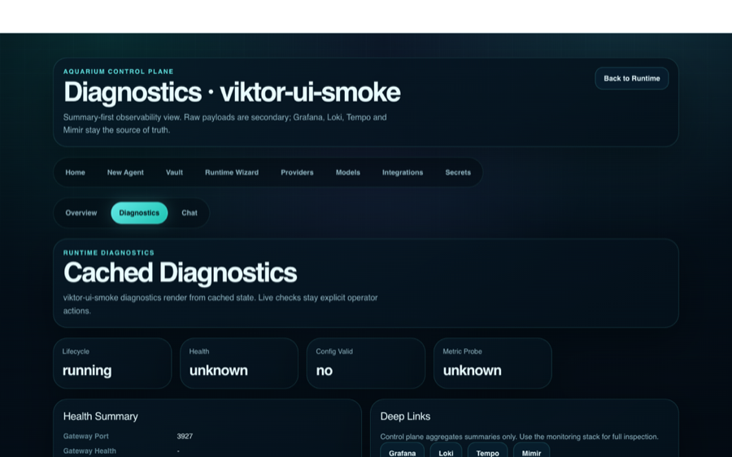

Run NullClaw-like agents as managed runtimes.
Aquarium wraps an imported NullClaw runtime with an operator console, Infisical-backed secrets, LiteLLM budgets, per-runtime keys, diagnostics, and a local SSO perimeter.

A control plane around the runtime, not a fork of it.
Aquarium treats upstream NullClaw as imported runtime source. The platform work lives at the boundary: lifecycle, secrets, model access, limits, diagnostics, and operator workflows.
Bootstrap the real local stack.
The project is intentionally real-only. A complete run requires real provider credentials and, if Telegram is enabled, a real bot token.
/opt/homebrew/bin/python3.12 -m venv .venv
.venv/bin/pip install -e .[dev]
cp infisical-stack/.env.example infisical-stack/.env
make infisical-up
INFISICAL_API_URL=http://127.0.0.1:18080 infisical loginOPENROUTER_API_KEY=... TELEGRAM_BOT_TOKEN=... make demo-up
make demo-checkmake perimeter-tls
make perimeter-bootstrap
make perimeter-up
make perimeter-healthSecrets are centralized, scoped, and injected.
Infisical is the source of truth. Aquarium creates or uses one secret scope per runtime and keeps provider master credentials out of runtime scopes.
runtime_project:
env: prod
path: /runtime
secrets:
- LITELLM_API_KEY
- TELEGRAM_BOT_TOKEN
- TELEGRAM_ALLOW_FROMModel access goes through runtime keys.
LiteLLM is the mandatory gateway between hosted runtimes and providers. The orchestrator provisions per-runtime keys and stores them back in Infisical.

LiteLLM UI is internal-only on loopback. The fallback login uses username `admin` and the current LiteLLM master key.
The secret store is independent of the runtime.
Infisical keeps its own app-level authentication. The perimeter can gate access to the UI, but Infisical remains the authority for projects, environments, service tokens, and secret values.
curl -fsS http://127.0.0.1:18080/api/status
open https://secrets.lvh.me
open http://127.0.0.1:18080Use the HTTPS perimeter for browser work.
The supported browser path is Caddy + Authelia over local trusted TLS. The `lvh.me` aliases resolve to localhost without editing `/etc/hosts`.
make perimeter-tls
make perimeter-bootstrap
make perimeter-up
make perimeter-healthDraft first, launch explicitly.
The Agent Builder creates a draft agent. Launch is a separate action from Agent Studio, which makes the runtime boundary visible and keeps secret validation explicit.

Runtime launch creates config, keys, and state.
At launch time Aquarium compiles the prompt and selected skills, creates or updates the runtime, provisions a LiteLLM key, writes per-runtime config, and starts the gateway.

curl -fsS http://127.0.0.1:3927/healthThe operator UI shows cached state first.
Normal page loads are read-only. Live probes, secret checks, smoke tests, and diagnostics refreshes are explicit operator actions, so ordinary GET requests do not put write pressure on SQLite.

Separate service health from browser auth.
make infisical-health
make litellm-health
make perimeter-health
docker ps --format 'table {{.Names}}\t{{.Status}}\t{{.Ports}}'make controlplane-migrate
make controlplane-bootstrap-operator
make controlplane-checkUsed solutions and license references.
Aquarium itself is MIT licensed. Third-party tools keep their own licenses and terms.
| Solution | Role | License / terms |
|---|---|---|
| Aquarium | Platform wrapper and documentation | MIT |
| NullClaw | Imported upstream runtime | MIT |
| Infisical | Secrets source of truth | MIT expat with enterprise exceptions |
| LiteLLM | LLM gateway and key limits | MIT with enterprise exception |
| Django | Control-plane web framework | BSD-3-Clause |
| Django Unfold, Typer, Pydantic, PyYAML, pytest | Python application and testing stack | MIT or BSD-family via upstream license files |
| Requests | HTTP client | Apache-2.0 |
| Caddy | Local HTTPS reverse proxy | Apache-2.0 |
| Authelia | Local SSO perimeter | Apache-2.0 |
| Grafana, Loki, Tempo | Optional observability UI/logs/traces | AGPL-3.0 for core projects |
| Grafana Alloy | Telemetry collection | Apache-2.0 |
| Docker, PostgreSQL, Redis | Local infrastructure | Verify terms for the selected image tags before redistribution or production use |
| Prism.js | Syntax highlighting on this page | MIT |
| OpenRouter | External provider route | Commercial API service, not bundled |